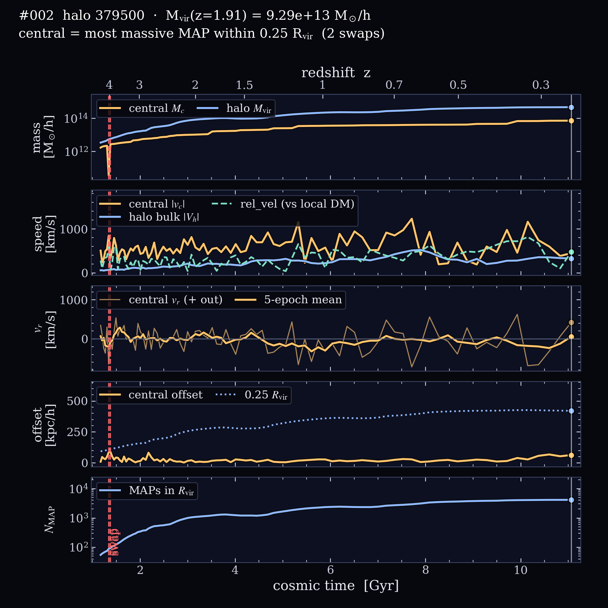

Rank #002 at z = 1.91 · AbacusAurora rockV2 c000 ph390
Halo 379500
At z = 1.91 this is the #2 most massive host, with Mvir = 9.29 × 1013 M☉/h and Rvir = 1109 kpc/h, holding 1,170 MAPs. It grows 135× between z = 5 and 0.22 and reaches half its final mass by z = 0.78. Its largest growth spurt since z = 2 is ×1.39 in 0.37 Gyr (z = 1.38 → 1.26). The 15 × 15 × 5 h−1Mpc slab around it is 3.4× the cosmic mean density (the densest surroundings of the 6 halos here), with 11 other hosts above 1012 M☉/h within 5 h−1Mpc. The central galaxy changes identity 2 times (marked in the plots).
Central galaxy. The camera circles the halo’s main progenitor, always pointing at its centre. The cyan ring marks the central galaxy (the most massive MAP within 0.25 Rvir). Panels on the right fill in as the movie plays: central and halo mass, speeds, radial velocity, the central’s offset from the halo centre, and the number of MAPs in Rvir.
At z = 1.91
Mvir
9.29 × 1013 M☉/h
Rvir
1109 kpc/h
Vmax
1160 km/s
Position
(77.5, 2.6, 14.1) h−1Mpc
MAPs in Rvir
1,170
median MAP Pram
6.68 × 108 ρ̄(km/s)2
Growth, z = 5 → 0.22
Mvir(z = 5)
3.43 × 1012 M☉/h
Mvir(z = 0.22)
4.64 × 1014 M☉/h
half-mass redshift
0.78
largest spurt since z = 2
×1.39 in 0.37 Gyr (z = 1.38 → 1.26)
central mass
1.70 × 1012 → 7.14 × 1013 M☉/h
central offset
median 20, max 89 kpc/h
peak central speed
1230 km/s at z ≈ 0.63
central swaps
2
MAPs in Rvir, z = 0.22
4,143
Environment at z = 1.91
slab density ⟨1+δ⟩
3.35 (15×15×5 h−1Mpc)
hosts > 1012 within 5 h−1Mpc
11
hosts > 1012 within 10 h−1Mpc
44
nearest more massive halo
91.7 h−1Mpc, 9.40 × 1013 M☉/h

Full history. The same panels as the movie, drawn to the end.